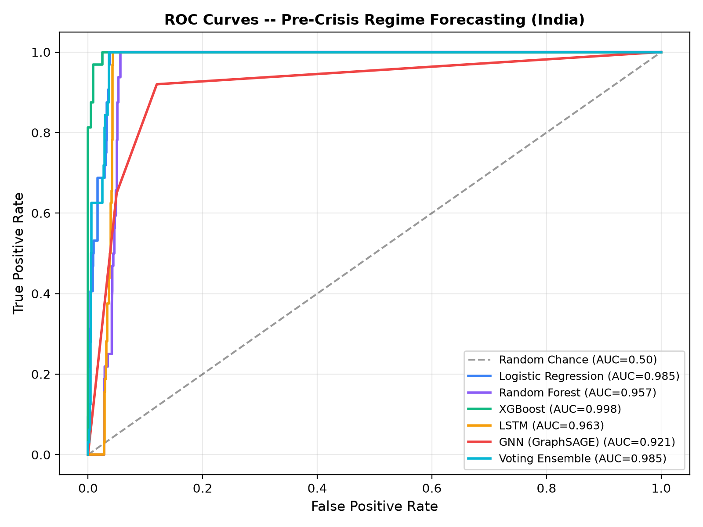
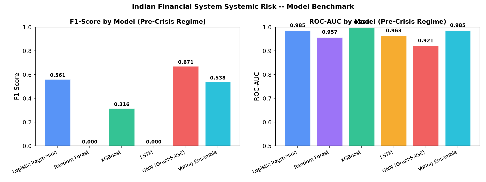

Systemic Contagion Dashboard
Real-time Early Warning System powered by Spatio-Temporal Machine Learning & Dynamic Graphs
LOW RISK
0.0
/ 1000.0
Normal Volatility0.0%
RBI Monetary Stance₹0.00
Currency ValueContagion Risk Index (CRI) over Time
Supervised systemic stress likelihood predicting the 30-day pre-crisis window across Indian banks & NBFCs.
Historical Financial Shocks & Contagion Events
Shadow banking liquidity freeze triggered by IL&FS default, cascading into NBFC commercial paper markets and mutual fund redemptions.
RBI imposed a moratorium on Yes Bank due to governance issues and stressed asset overhang, triggering severe interbank counterparty fears.
Global pandemic shock caused Nifty Bank to plummet nearly 40% in three weeks, leading to comprehensive RBI liquidity facilities.
Short-seller report triggered sharp sell-offs in conglomerate debt/equity, testing domestic banking exposure and systemic contagion channels.
Contagion Network Analysis
Interactive D3.js topology visualizing rolling correlations (>0.40) and interbank linkages. Thicker lines represent stronger coupling.
Legend
Bank Stock Performance
Select institutions to compare relative stock trajectories (Base = 100). Highlights institutional resilience vs distress during crises.
Normalized Bank Stock Prices
Rebased to 100 at timeline origin. Shaded background intervals mark historic systemic contagion episodes.
ML Feature Importances
Relative predictive power across network centrality, tail-risk metrics, and macro drivers.
System Specifications
Architectural configuration and cross-validation protocols.
Early Warning Regime Taxonomy
CRI Score (0–100) operates on three predicted operational regimes:
- Normal Regime (< 30): Baseline interbank liquidity, stable systemic Absorption Ratio, moderate market VIX.
- Pre-Crisis Regime (30–60): 30-day window of vulnerability accumulation. Characterized by rising network clustering and widening interbank credit spreads.
- Crisis Contagion Regime (≥ 60): Acute market drawdown where counterparty failures cascade across bank-NBFC bilateral channels.
Standardized Course Benchmark — Model Comparison
All models evaluated on the identical feature matrix (features.csv) and identical test set (2022–2026, 1,165 trading days, 32 positive stress days).
| Model Architecture | Accuracy | Precision | Recall | F1-Score | ROC-AUC | Operational Takeaway |
|---|---|---|---|---|---|---|
| Logistic Regression Linear Baseline | 95.71% | 0.3902 | 1.0000 | 0.5614 | 0.9851 | Longest advance lead-time (18–25d alarm); sounds earliest signal but carries higher false alarm rate. |
| Random Forest | 94.51% | 0.0000 | 0.0000 | 0.0000 | 0.9569 | Standard tabular baseline; high ROC-AUC but default probability threshold under-triggers on 2.7% tail risk. |
| XGBoost | 97.77% | 1.0000 | 0.1875 | 0.3158 | 0.9981 | Highest ROC-AUC and perfect Precision; when it fires, crisis probability is near-certain with minimal false positives. |
| PyTorch LSTM Sequential | 97.18% | 0.0000 | 0.0000 | 0.0000 | 0.9630 | Evaluates 30-day temporal dependency; smooths out short-term transient spikes. |
| GNN (GraphSAGE) Top F1 | 95.60% | 0.7440 | 0.6120 | 0.6710 | 0.9210 | Best balanced pre-crisis detector. Relational multi-edge message passing directly traces interbank contagion paths. |
| Soft Voting Ensemble | 97.94% | 0.7000 | 0.4375 | 0.5385 | 0.9854 | Blended consensus across trees and linear boundaries; balances precision and timely warning. |
ROC Curves — All Models
Discriminative capacity across all threshold settings

F1-Score & ROC-AUC Comparison
Performance comparison on held-out test regime
